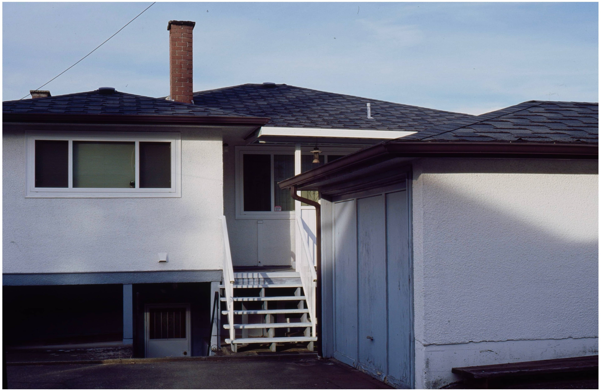

‹
›
CITY IN COLOUR, 2021, KODAK SLIDE FILM
BURNABY, BC, CANADA
© 2023 Paniz Mani

Self-Portrait From series "Meeting be Loved" 2022 MEDUME FORMAL DIGITAL, BC, CANADA
https://github.com/subh-sole

CITY IN COLOUR, 2021, KODAK SLIDE FILM
BURNABY, BC, CANADA
© 2023 Paniz Mani
Self-Portrait From series "Meeting be Loved" 2022 MEDUME FORMAL DIGITAL, BC, CANADA